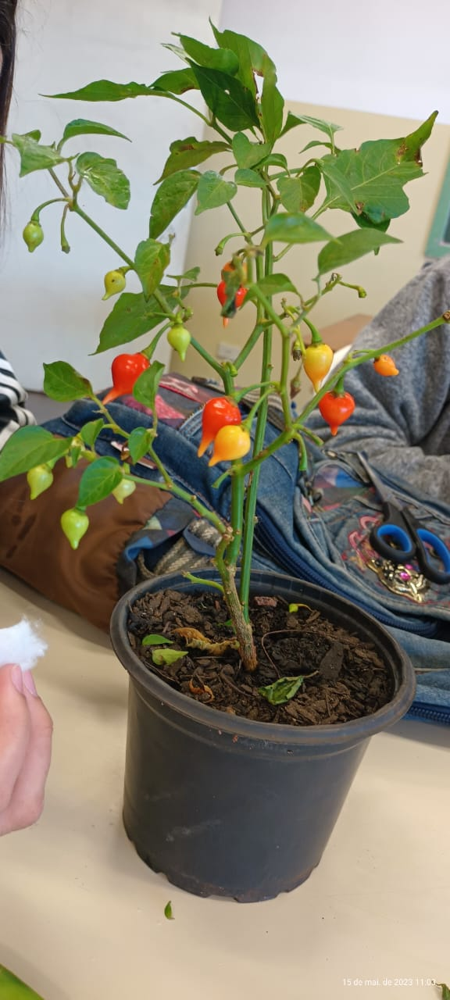

Olá, me Emanuely da Silva Alberton e sou aluna da prof Ana Marcia do Colégio Estadual Duque de Caxias.
Sou do grupo 1 estou utilizando essa página HTML com a ajuda professor Guilherme Beraldi para uma apresentação online de meus trabalhos á Prof. Ana Maria na matéria de Biotecnologia.
Na semana 1 do dia 15/05/23 percebemos que nossas pimentas biquinho estavam com pulgões. Fizemos a retirada com água, vinagre e detergente molhado no algodão. Relizamos a analise e propagação vegetativa entre elas escolhemos a etaquia, por ser mais facil e adequeda ao ambiente escolar e a area pequena.
Hoje dia 24/05/2023 tivemo aula com a professora Ana Marcia de biologia e biotecnologia. Fomo para o laboratorio para que pudessemo replantar e levar a planta biquinho e as mudas menores dela.Começamos então a cortar duas garrafas pets ao meio para tranposrtar as mudas pequena com terra limpa. Em três copos plasticos acresentamos terra limpa, e neles plantamos no total 10 suculentas. Em outra garrafa pet colocamos tambem um bambu e 33,5 cm em terra limpa. Jogamos enraizador em tudo que plantamos para que nasca raizes, e deixamo no sol. Por fim fizemos as marcações do número o grupo e data em todoos potes.
SEMANA 3Hoje dia 29/05/23 nessa aula subimos para o laboratorio, tiramos os pulgõe encontrado na pimenta, pois, todas as mudinha haviam morrido. Podamos as pimentas retirando as parte mortas e estressaas. E depois borrifamos com água as nossas planta
No relatoria da semana 4, subimos ao laboratório, aguamos a muda da pimenta biquinho e a nossa suculenta. Tiramos algumas fotos e analisamos se obteve mudanças.Fomos onde haviamos deixado a planta para tomar sol, para verificar as mudanças, e as folhas da nossa planta "Pimenta Biquinho" havia caído todas e os galhos secou um pouco, as mudinhas plantadas atráves da semente da pimenta, morreram todas, e as nossas suculentas não enraizaram, aguamos a planta e descartamos as mortas.